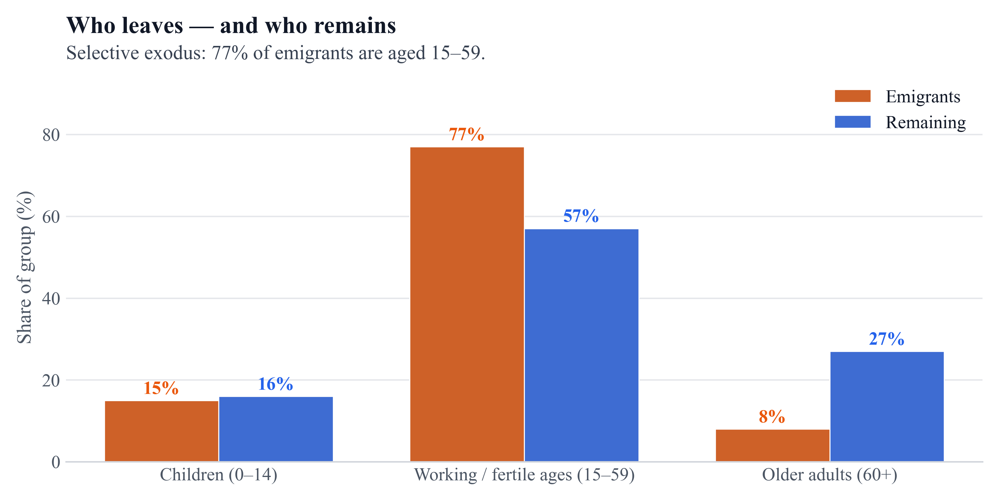
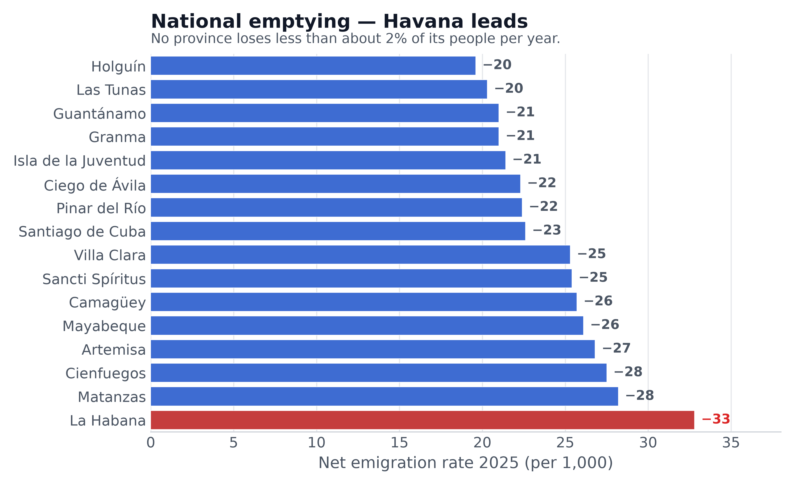

Official headcount versus scenarios
ONEI ≈9.43 M vs the central scenario ≈8.58 M (end-2025). Post-2026: illustrative trend, not a forecast.

The post-2026 segment is a non-probabilistic trend scenario, not a forecast.
Source: ONEI / Monte Carlo scenarios (central scenario = illustrative central path).
Demographic scissors: more deaths, fewer births
Since 2020 deaths exceed births by a wide margin. In 2025 two people die for every baby born.

Source: ONEI demographic yearbooks. The 2021 spike corresponds to the COVID wave.
Eight sources, soft band 8.0–8.7 M
High ceilings (UN, electoral roll) vs exit-correcting anchors (Albizu, housing). The central scenario is the study estimand, not external validation.

Electoral roll, MINSAP, housing occupancy, UN, Albizu-Campos (2024, 2025), and the central scenario.
Excess deaths vs the 2019 schedule, 2024–2025
Illustrative ~28.5k/yr vs 2019 schedule (band 18.6–38.2k).

Kitagawa-type decomposition of death counts against a fixed 2019 age-specific schedule. The residual is not identified as health-system deterioration.
The young leave; the old remain
77% of emigrants are aged 15–59. Each young exit reduces future births.

Age composition of emigrants vs residents; median age leavers ≈30, stayers 45.
Emptying is national; Havana leads
All provinces lose about 2% of their people per year (ONEI; levels may be biased).

Net emigration 2025 per 1,000 inhabitants. Source: ONEI Indicators 2025.